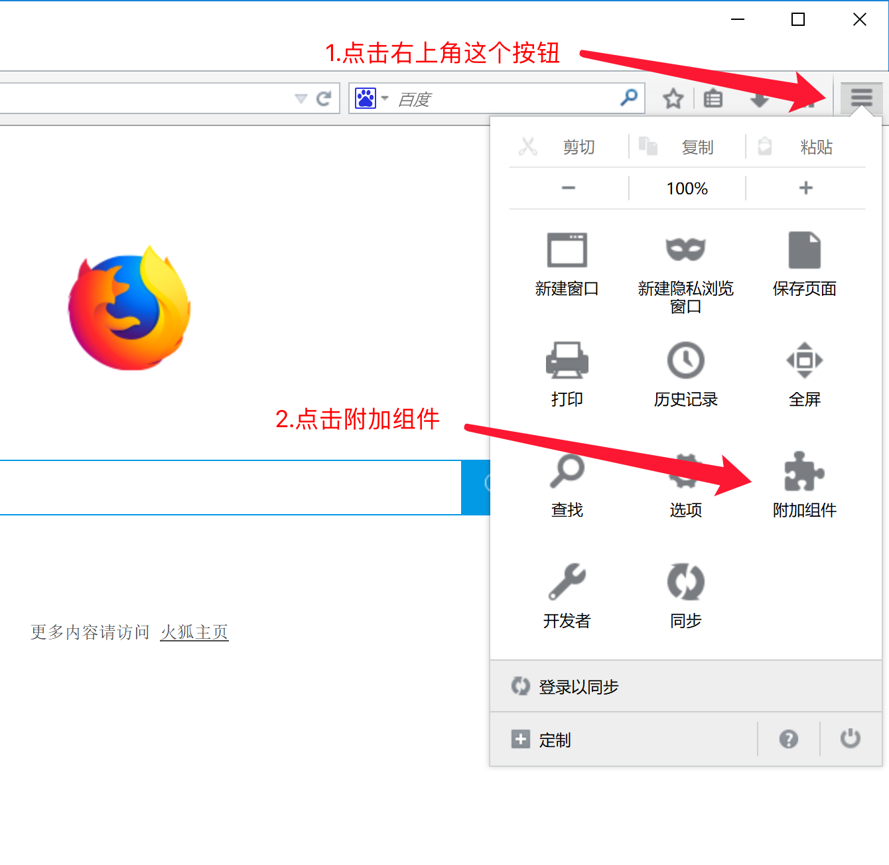
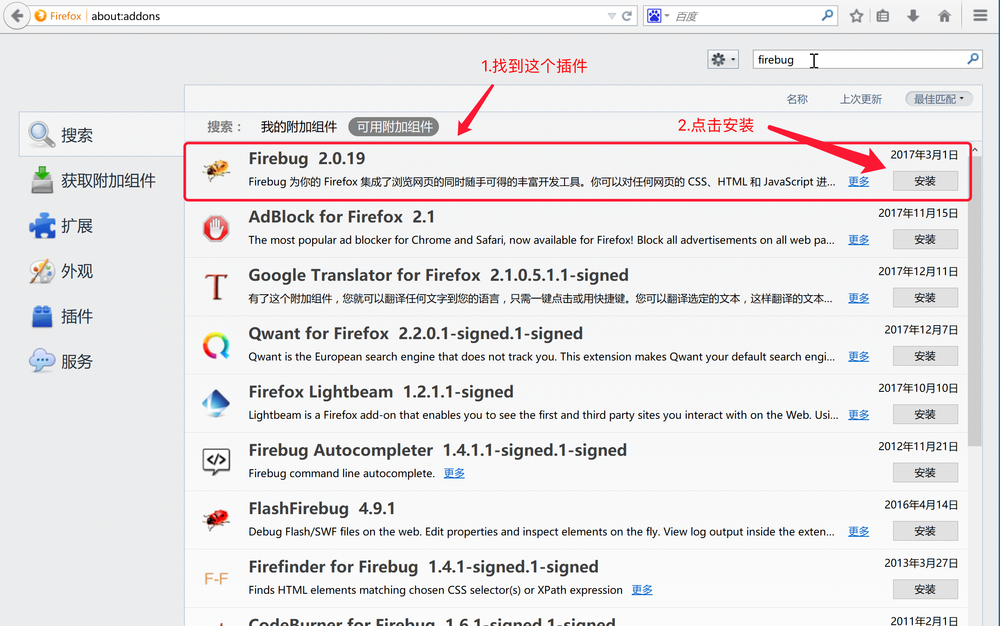
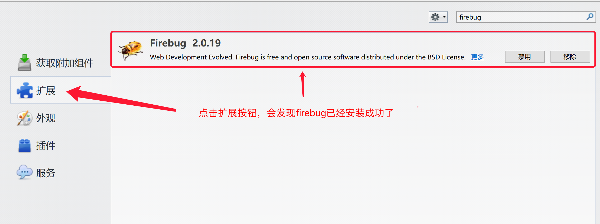
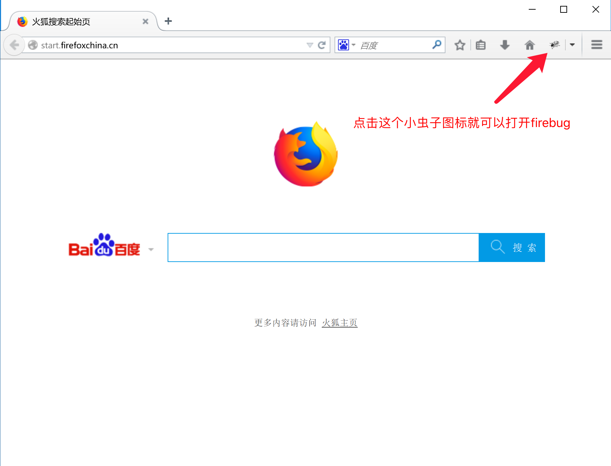
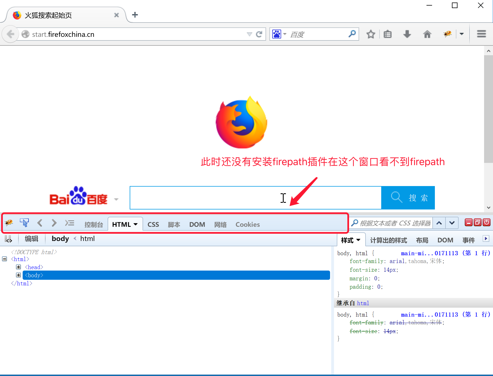
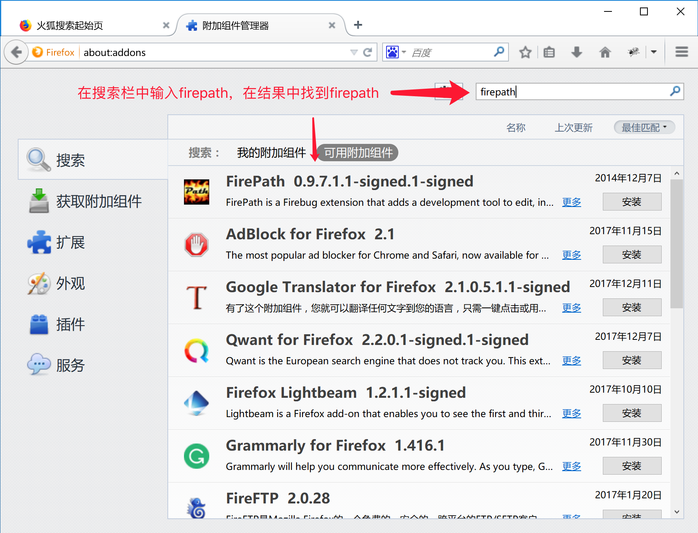
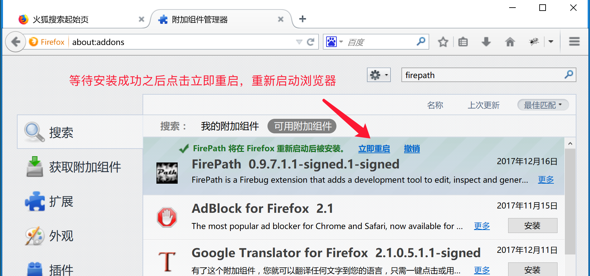

2.1 工具的安装与使用
0.要想让计算机定位到元素，就要使用计算机能够读懂的css选择器或者xpath路径表达式，那么我们就需要用到接下来的几个插件(以下的这些插件都是Firefox浏览器插件，我们需要安装Firefox浏览器，Firefox浏览器的安装配置参考3.1.3第三部分火狐浏览器的安装介绍)
1.安装firebug插件
1.打开firefox浏览器,点击右上角菜单 
2.在右上角的搜索栏中输入firebug，并回车

3.在搜索结构中找到firebug,并点击搜索结果之后的安装 
4.安装完成后，点击扩展查看右侧列表中是否存在firebug 
5.打开firebug插件 
6.检查未安装firepath插件 
2.安装firepath插件
1.搜索firepath插件按照上述步骤进行操作，进行安装 
2.安装完成之后提示重新启动浏览器，点击重启 
3.重启浏览器之后打开firebug，在如图所示位置出现firepath,则表示插件安装完成